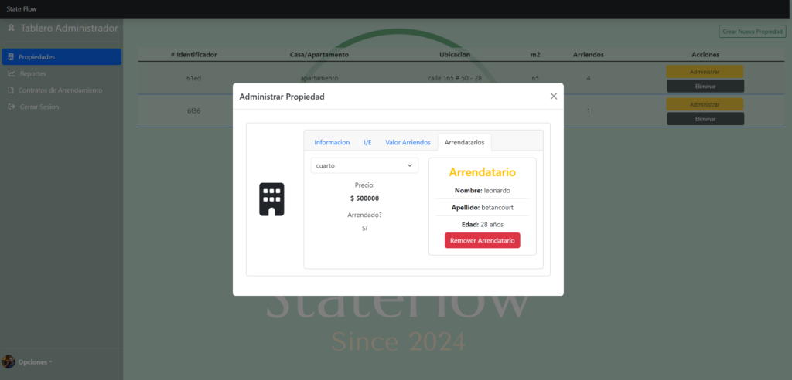
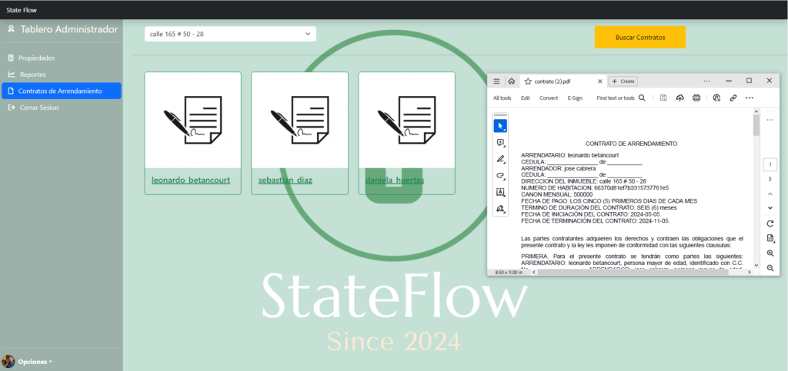
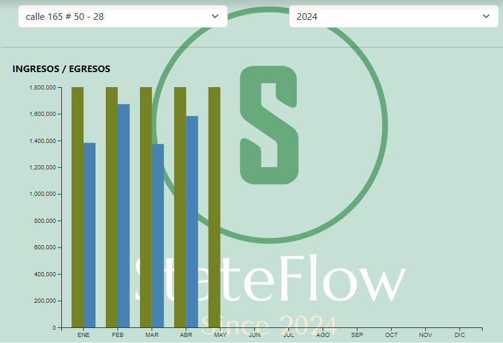

<main class="p-0 m-0">
    <div class="container text-center m-0" id="page">
        <app-nav></app-nav>
        <div class="row" id="section1_intro">
            <div class="col-lg-6 col-md-12 border border-black">
                <H1>Transform Your Property Management with <span><strong>StateFlow</strong></span></H1>
                <H3>Managing properties can be overwhelming—tracking tenants, contracts, payments, and expenses is
                    time-consuming and error-prone. As a homeowner or real estate agent, you need an efficient, reliable
                    system to keep everything organized and accessible.</H3>
                <P>nter StateFlow, your all-in-one solution for managing rental properties effortlessly. Developed by
                    Jose Cabrera, a passionate software developer, StateFlow was born out of a personal need to manage
                    his own properties more effectively. From keeping documents in one secure place to visualizing
                    financial insights, StateFlow simplifies property management so you can focus on growing your real
                    estate business.</P>
            </div>
            <div class="col-lg-6 col-md-12 border border-black position-relative">
                
            </div>
        </div>
        <div class="row" id="section3_media">
            <div class="col-12 border border-black" id="section2_media">carrousel</div>
        </div>
        <div class="row" id="section3_features">
            <div class="col-lg-6 col-md-12 border border-black">
                
            </div>
            <div class="col-lg-6 col-md-12 border border-black">
                <H1>Powerful Features Tailored for Property Managers</H1>
                <H3>StateFlow is packed with features that make managing properties, tenants, and finances a breeze.
                    Here’s what you can expect:</H3>
                <ul>
                    <li><strong>Property and Tenant Management</strong></li>
                    <li><strong>Contract Automation</strong></li>
                    <li><strong>Financial Reports</strong></li>
                </ul>
            </div>
        </div>
        <div class="row" id="section4_cards">
            <div class="col-12 border border-black">
                <div class="row row-cols-1 row-cols-md-3 g-4">
                    <div class="col">
                        <div class="card h-100">
                            
                            <div class="card-body">
                                <h5 class="card-title">Property and Tenant Management</h5>
                                <p class="card-text">Effortlessly manage all aspects of your properties. From creating
                                    new properties and tracking monthly utility expenses to updating rental prices and
                                    managing tenant details, StateFlow keeps everything organized in one convenient
                                    place, so you can focus on what matters most—your properties and tenants.</p>
                            </div>
                        </div>
                    </div>
                    <div class="col">
                        <div class="card h-100">
                            
                            <div class="card-body">
                                <h5 class="card-title">Contract Automation</h5>
                                <p class="card-text">Save time and reduce paperwork with automated contract generation.
                                    With just a few clicks, create professional rental contracts that are securely
                                    stored and easily accessible anytime, anywhere. Simplify your rental processes and
                                    give yourself peace of mind knowing your documents are safe and organized.</p>
                            </div>
                        </div>
                    </div>
                    <div class="col">
                        <div class="card h-100">
                            
                            <div class="card-body">
                                <h5 class="card-title">Financial Reports</h5>
                                <p class="card-text">Get a clear picture of your property's financial health with
                                    beautifully designed, easy-to-read graphs. Instantly see your income, expenses, and
                                    trends over time, helping you make informed decisions with confidence.</p>
                            </div>
                        </div>
                    </div>
                </div>
            </div>
        </div>
        <div class="row" id="section5_author">
            <div class="col-lg-6 col-md-12 border border-black">
                <h1>Meet the Developer: Jose Cabrera, The Mind Behind StateFlow</h1>
                <p>Jose Cabrera, a seasoned software developer, created StateFlow to solve his own property management
                    challenges. From the very first lines of code to deployment on AWS, this project has been a labor of
                    love.</p>
                <p>The idea for StateFlow came out of necessity. Jose needed a way to keep all his rental property
                    documents organized in one place—accessible from anywhere, and with the ability to generate
                    contracts automatically. Tired of juggling spreadsheets and paper contracts, Jose decided to create
                    an app that would not only solve his own problem but also help other property owners facing similar
                    struggles.</p>
                <p><strong>Challenges Faced and Achievements:</strong> Developing StateFlow wasn’t easy. The biggest
                    challenge was ensuring secure, reliable storage for sensitive tenant contracts, which he solved by
                    leveraging AWS services like S3 and IAM for role-based access control. Additionally, creating
                    financial reports that are both accurate and easy to understand pushed him to incorporate the D3.js
                    library for dynamic data visualization. His dedication paid off: StateFlow 1.0 was launched in April
                    2024, and it’s already making property management easier for users.</p>
                <p><strong>Lessons Learned:</strong>Throughout the journey, Jose learned the importance of adaptability
                    and the power of collaboration. He became proficient in cloud architecture (AWS), improved his
                    skills by 40%, and solidified his commitment to building tools that solve real problems. Each
                    challenge was a stepping stone to creating a better product for the users.</p>
                <p><strong>What’s Next:</strong>Now, Jose is working on StateFlow 2.0—building upon the strong
                    foundation of version 1.0 with new use cases and enhanced performance. His goal is to provide an
                    even more robust tool for property managers, with features that streamline every aspect of their
                    work.</p>
                <p><strong>Join Jose and other homeowners and real estate agents who are transforming how they manage
                        properties with StateFlow. Try it today and experience the difference a tailored tool can
                        make.</strong></p>
            </div>
            <div class="col-lg-6 col-md-12 border border-black">
                
            </div>
        </div>
        <div class="row">
            <div class="col-12 border border-black">
                <footer class="bg-dark text-white pt-4">
                    <div class="container">
                        <div class="row">
                            <!-- Links to sections -->
                            <div class="col-lg-6 col-md-6 mb-4">
                                <h5 class="text-uppercase">Quick Links</h5>
                                <ul class="list-unstyled">
                                    <li><a href="#section1_intro" class="text-white">Introduction</a></li>
                                    <li><a href="#section2_media" class="text-white">Media</a></li>
                                    <li><a href="#section3_features" class="text-white">Features</a></li>
                                    <li><a href="#section4_cards" class="text-white">Use Cases</a></li>
                                    <li><a href="#section5_author" class="text-white">About the Author</a></li>
                                </ul>
                            </div>

                            <!-- Contact Info or Additional Content -->
                            <div class="col-lg-6 col-md-6 mb-4">
                                <h5 class="text-uppercase">Get in Touch</h5>
                                <p>For any inquiries or feedback, feel free to reach out to us via email at <a
                                        href="mailto:cabrerajosemiguel28@gmail.com"
                                        class="text-white">cabrerajosemiguel28@gmail.com</a>.</p>
                            </div>
                        </div>

                        <hr class="mb-4">

                        <!-- Copyright Statement -->
                        <div class="row">
                            <div class="col-md-12 text-center">
                                <p class="mb-0">&copy; 2024 StateFlow. All Rights Reserved. | Developed by Jose Cabrera
                                </p>
                            </div>
                        </div>
                    </div>
                </footer>
            </div>
        </div>
    </div>
</main>